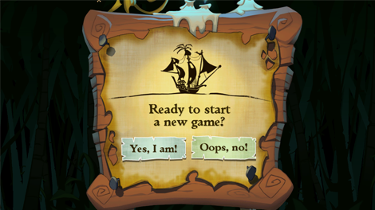
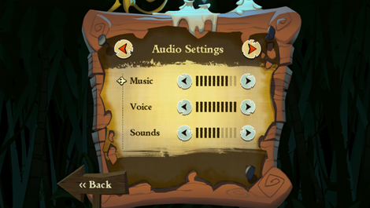
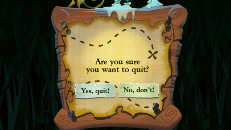

7 |
Das Spiel starten |
 |
Wähle das Spiel im Wii-Menü. Der Bildschirm für die Kanalvorschau wird daraufhin geladen. Um eine Episode zu starten, gehst du mit dem Zeiger auf Start und drückst den A-Knopf. Dadurch wird das Hauptmenü aufgerufen.
Im Hauptmenü gibt es folgende Optionen:

Zeige auf New Game und drücke den A-Knopf. Treffe deine Wahl, wenn du gefragt wirst, und drücke mit dem A-Knopf auf Yes, I am!, um dein Abenteuer zu starten oder Oops, no!, wenn du lieber wieder ins Hauptmenü zurückkehren möchtest.
Zeige auf Save & Load und drücke den A-Knopf. Es ist immer eine gute Idee, Spielfortschritte zu speichern. Das Spiel besitzt eine automatische Speicherfunktion, die an wichtigen Punkten im Spiel zum Einsatz kommt. Jede automatische Speicherung überschreibt die vorherige, wenn du also später bereits erledigte Teile des Spiels erneut durchspielen möchtest, solltest du auch in anderen Speicherablagen speichern. Um einen Spielstand manuell zu speichern oder zu laden, gehe ins Save & Load-Menü, drücke den A-Knopf, um mit den Pfeilen nach links oder rechts zu gehen, wähle die Speicherablage und drücke mit dem A-Knopf entweder auf Save Game oder auf Load Game. Wähle Back oder drücke den B-Knopf, um ins Hauptmenü zurückzukehren.
Zeige auf Settings und drücke den A-Knopf. In diesem Bildschirm kannst du deine Spieleinstellungen anpassen. Du kannst zwischen Gameplay Settings und Audio Settings auswählen, indem du auf die entsprechenden Pfeile zeigst und den A-Knopf drückst. Wähle Back oder drücke den B-Knopf, um ins Hauptmenü zurückzukehren.

Zeige auf die Pfeile und drücke den A-Knopf, um die Audioeinstellungen deinem Geschmack anzupassen.
Beachte: Einige Puzzles im Spiel greifen auf Geräusche zurück. Sounds vollständig abzuschalten, ist daher keine gute Idee.

Zeige auf Quit und drücke den A-Knopf. Treffe deine Wahl, wenn du gefragt wirst, und drücke mit dem A-Knopf auf Yes, quit!, um das Wii-Menü zu verlassen oder No, don't!, wenn du lieber wieder ins Hauptmenü zurückkehren möchtest.
 Tiki-Götterfiguren sind überall auf Flotsam Island vergraben und jede bewacht einen wertvollen Schatz. Folge den Karten, um diese Tiki zu finden. Zeige auf Treasure Hunting und drücke den A-Knopf. Treffe deine Wahl, wenn du gefragt wirst, und drücke mit dem A-Knopf auf Yes, I am!, um die Schatzsuche zu starten oder Oops, no!, wenn du lieber wieder ins Hauptmenü zurückkehren möchtest. |
 |
 |
 |